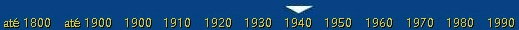
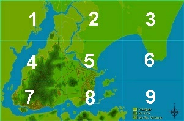
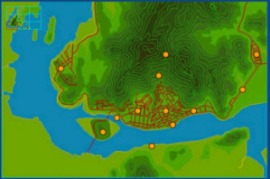
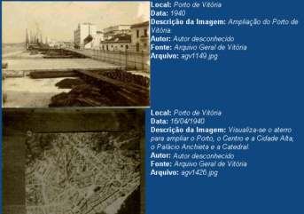
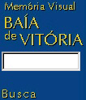
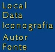

Há basicamente três modos de se pesquisar os dados disponíveis. Um modo é pela pesquisa a partir dos mapas de cada época. Outro modo é a partir da busca por palavra-chave, e o terceiro modo é por alguma característica das imagens, como local, autor, iconografia, etc.
A pesquisa a partir dos mapas proporciona uma visão geográfica como ponto de partida para se chegar às imagens, além de permitir uma observação da dinâmica da malha urbana com a mudança das épocas.
Para selecionar um mapa de uma época, escolha a época na aba superior listada acima, como na figura abaixo:

Para saber qual período engloba cada época, posicione por instantes o cursor sobre uma época que o mesmo será apresentado.
Após clicar sobre uma época, será apresentado o seu respectivo mapa da baía de Vitória. Supondo que foi clicado em 1940 (que engloba os anos de 1940 até 1949), será apresentado o seguinte mapa, dividido em nove partes (aqui, reduzido e com numeração para facilitar a ajuda):

Cada uma das nove partes poderá ser ampliada com um clique do mouse com o cursor sobre cada parte. Supondo que foi clicado sobre a parte sete do mapa acima, obteremos a ampliação:

Nota-se, em escala menor, no canto superior esquerdo o mapa reduzido da época que o mapa ampliado pertence com tal parte apresentada em destaque. Para mudar para outra parte, basta clicar na nova região desejada no mapa reduzido do canto superior esquerdo.
Nota-se que o mapa ampliado já apresenta algumas informações obtidas da base da dados. Uma é o posicionamento de pontos alaranjados, indicando que nesses pontos há informações cadastradas. Ao posicionar o cursor sobre tais pontos é apresentado o nome do local que o mesmo representa. Ao clicar sobre algum desses pontos alaranjados serão apresentadas as imagens desse local, da época especificada (1940 até 1949), com as outras informações relativas às imagens, conforme abaixo:

As imagens são agrupadas de dez em dez para não sobrecarregar a navegação, e cada imagem poderá ser ampliada com um clique do mouse.
Atenção! A busca por palavra-chave só é possível através do site www.baiadevitoria.ufes.br!
Efetuar pesquisa por palavra-chave permite localizar na base de dados as ocorrências da palavra digitada nos campos: local, data, autor, fonte e descrição da imagem.
Para efetuar a pesquisa, digite a palavra no campo que está à esquerda(conforme a figura) e clique em "Busca".

Pode-se digitar uma palavra incompleta para uma busca mais abrangente, como por exemplo, a palavra "capi" (sem as aspas), e onde contiver qualquer palavra que comece com "capi", será uma ocorrência válida, como "capichaba", ou "capixaba". O mesmo vale para palavras incompletas no início, ou início e fim simultaneamente, como "edr" para encontrar "catedral", "Pedro", e outras.
Buscas em maiúsculo ou minúsculo retornam as mesmas ocorrências.
Pode-se também digitar um ano específico para uma busca mais apurada de datas, como por exemplo, "1936", ou por um dia específico como "26/08/1998.
Pesquisar por características das imagens permite selecionar todas as ocorrências de uma característica específica, como um local, data, iconografia, autor e fonte, como está ao lado e repetido na figura abaixo:

Locais, iconografias, autores e fontes são todos disponíveis a partir de um clique e as datas são divididas em intervalos para facilitar a pesquisa.